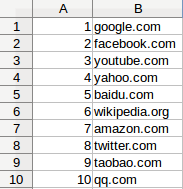
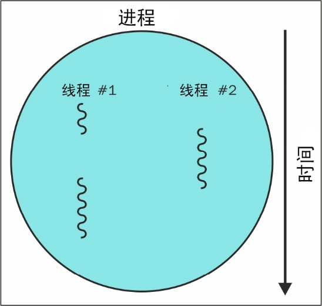

如果你希望队列拥有更多功能，但又有着与Redis相同的可用性，我推荐你了解python-rq，这是一个易于安装和使用的Python任务队列，它与Celery类似，但其功能和依赖更少。
在之前的章节中，我们的爬虫都是串行下载网页的，只有前一次下载完成之后才会启动新下载。在爬取规模较小的示例网站时，串行下载尚可应对，但面对大型网站时就会显得捉襟见肘了。在爬取拥有100万网页的大型网站时，假设我们以每秒一个网页的速度持续下载，耗时也要超过11天。如果我们可以同时下载多个网页，那么下载时间将会得到显著改善。
本章将介绍使用多线程和多进程这两种下载网页的方式，并将它们与串行下载的性能进行比较。
在本章中，我们将会介绍如下主题：
想要测试并发下载的性能，最好要有一个大型的目标网站。为此，我们将使用Alexa提供的最受欢迎的100万个网站列表，该列表的排名根据安装了Alexa工具栏的用户得出。尽管只有少数用户使用了这个浏览器插件，其数据并不权威，但它能够为我们提供可以爬取的大列表，对于这个测试来说已经足够好了。
我们可以通过浏览Alexa网站获取该数据。此外，我们也可以通过http://s3.amazonaws.com/alexa-static/top-1m.csv.zip直接下载这一列表的压缩文件，这样就不用再去抓取Alexa网站的数据了。
Alexa网站列表是以电子表格的形式提供的，表格中包含两列内容，分别是排名和域名，如图4.1所示。

图4.1
抽取数据包含如下4个步骤。
1．下载.zip文件。
2．从.zip文件中提取出CSV文件。
3．解析CSV文件。
4．遍历CSV文件中的每一行，从中抽取出域名数据。
下面是实现上述功能的代码。
import csv
from zipfile import ZipFile
from io import BytesIO, TextIOWrapper
import requests
resp = requests.get('http://s3.amazonaws.com/alexa-static/top-1m.csv.zip',
stream=True)
urls = [] # top 1 million URL's will be stored in this list
with ZipFile(BytesIO(resp.content)) as zf:
csv_filename = zf.namelist()[0]
with zf.open(csv_filename) as csv_file:
for _, website in csv.reader(TextIOWrapper(csv_file)):
urls.append('http://' + website)你可能已经注意到，下载得到的压缩数据是在使用BytesIO类封装之后，才传给ZipFile的。这是因为ZipFile需要一个类似文件的接口，而不是原生字节对象。我们还设置了stream=True，帮助加速请求。接下来，我们从文件名列表中提取出CSV文件的名称。由于这个.zip文件中只包含一个文件，所以我们直接选择第一个文件名即可。然后，使用TextIOWrapper读取CSV文件，它将协助处理编码和读取问题。该文件之后会被遍历，并将第二列中的域名数据添加到URL列表中。为了使URL合法，我们还会在每个域名前添加http://协议。
要想在之前开发的爬虫中复用上述功能，还需将其修改为一个简单的回调类。
class AlexaCallback:
def __init__(self, max_urls=500):
self.max_urls = max_urls
self.seed_url =
'http://s3.amazonaws.com/alexa-static/top-1m.csv.zip'
self.urls = []
def __call__(self):
resp = requests.get(self.seed_url, stream=True)
with ZipFile(BytesIO(resp.content)) as zf:
csv_filename = zf.namelist()[0]
with zf.open(csv_filename) as csv_file:
for _, website in csv.reader(TextIOWrapper(csv_file)):
self.urls.append('http://' + website)
if len(self.urls) == self.max_urls:
break这里添加了一个新的输入参数max_urls，用于设定从Alexa文件中提取的URL数量。默认情况下，该值被设置为500个URL，这是因为下载100万个网页的耗时过长（正如本章开始时提到的，串行下载需要花费超过11天的时间）。
现在我们可以对之前开发的链接爬虫进行少量修改，使用AlexaCallback串行下载Alexa的前500个URL。
为了更新链接爬虫，现在需要传入起始URL或起始URL列表。
# In link_crawler function
if isinstance(start_url, list):
crawl_queue = start_url
else:
crawl_queue = [start_url]我们还需要更新对每个站点中robots.txt的处理方式。我们使用一个简单的字典来存储每个域名的解析器（参见本书源码文件中chp4文件夹中的advanced_link_crawler.py#L53-L72）。我们还需处理如下情况：我们遇到的URL不一定是相对路径，甚至部分是无法访问的URL，比如包含mailto:的邮箱地址或包含javascript:的事件命令。此外，由于一些网站没有robots.txt文件，或是URL的格式存在问题，因此我们添加了一些额外的错误处理代码段以及一个新的变量no_robots，从而可以让我们在无法找到robots.txt文件时，仍然可以继续爬取。最后，我们添加了socket.setdefaulttimeout(60)，用于为robotparser以及第3章中Downloader类额外的timeout参数处理超时。
处理本例的主要代码位于本书源码文件的chp4文件夹中，其名为advanced_link_crawler.py。新的爬虫后续可以直接被AlexaCallback使用，类似如下所示，在命令行中运行。
python chp4/advanced_link_crawler.py
...
Total time: 1349.7983705997467s查看运行在文件__main__区域的代码，可以发现我们使用了'$^'作为模式，避免收集每个页面的链接。你也可以尝试使用'.'匹配所有内容，爬取每个页面上的所有链接。（警告：这将花费很长时间，很可能以天计！）
在串行下载时，只爬取第一个页面所花费的时间和预期一致，大约为每个URL平均2.7秒（包含测试robots.txt文件的时间）。因为你的网络运营商速度不同，以及你可能是在云服务器上运行脚本，因此你可能会得到速度更快的结果。
现在，我们将串行下载网页的爬虫扩展成并行下载。需要注意的是，如果滥用这一功能，多线程爬虫请求内容速度过快，可能会造成服务器过载，或是IP地址被封禁。
为了避免这一问题，我们的爬虫将会设置一个delay标识，用于设定请求同一域名时的最小时间间隔。
作为本章示例的Alexa网站列表，由于包含了100万个不同的域名，因而不会出现该问题。但是，当你以后爬取同一域名下的不同网页时，就需要注意两次下载之间至少需要1秒钟的延时。
图4.2所示为一个包含有多个线程的进程的执行过程。

图4.2
当运行Python脚本或其他计算机程序时，就会创建包含有代码、状态以及堆栈的进程。这些进程通过计算机的一个或多个CPU核心来执行。不过，同一时刻每个核心只会执行一个线程，然后在不同进程间快速切换，这样就给人以多个程序同时运行的感觉。同理，在一个进程中，程序的执行也是在不同线程间进行切换的，每个线程执行程序的不同部分。
这就意味着当一个线程等待网页下载时，进程可以切换到其他线程执行，避免浪费CPU周期。因此，为了充分利用计算机中的所有计算资源尽可能快地下载数据，我们需要将下载分发到多个进程和线程中。
幸运的是，在Python中实现多线程编程相对来说比较简单。我们可以保留与第1章开发的链接爬虫类似的队列结构，只是改为在多个线程中启动爬虫循环，从而并行下载这些链接。下面的代码是修改后链接爬虫的起始部分，这里把crawl循环移到了函数内部。
import time
import threading
...
SLEEP_TIME = 1
def threaded_crawler(..., max_threads=10, scraper_callback=None):
...
def process_queue():
while crawl_queue:
...下面是threaded_crawler函数的剩余部分，这里在多个线程中启动了process_queue，并等待其完成。
threads = []
while threads or crawl_queue:
# the crawl is still active
for thread in threads:
if not thread.is_alive():
# remove the stopped threads
threads.remove(thread)
while len(threads) < max_threads and crawl_queue:
# can start some more threads
thread = threading.Thread(target=process_queue)
# set daemon so main thread can exit when receives ctrl-c
thread.setDaemon(True)
thread.start()
threads.append(thread)
# all threads have been processed # sleep temporarily so CPU can
focus execution elsewhere
for thread in threads:
thread.join()
time.sleep(SLEEP_TIME))当有URL可爬取时，上面代码中的循环会不断创建线程，直到达到线程池的最大值。在爬取过程中，如果当前队列中没有更多可以爬取的URL时，线程会提前停止。假设我们有2个线程以及2个待下载的URL。当第一个线程完成下载时，待爬取队列为空，因此该线程退出。第二个线程稍后也完成了下载，但又发现了另一个待下载的URL。此时thread循环注意到还有URL需要下载，并且线程数未达到最大值，因此它又会创建一个新的下载线程。
后续我们可能还需要为该多线程爬虫添加解析。为此，我们可以使用返回的HTML为函数回调添加一段代码。我们可能希望从该逻辑或抽取中获取更多链接，因此我们还需要在后边的for循环中扩展我们解析的链接。
html = D(url, num_retries=num_retries)
if not html:
continue
if scraper_callback:
links = scraper_callback(url, html) or []
else:
links = []
# filter for links matching our regular expression
for link in get_links(html) + links:
...完整代码可以在本书源码文件中chp4文件夹中的threaded_crawler.py中查看。要想公平测试，还需要清洗你的RedisCache，或者使用一个不同的默认数据库。如果你已经安装了redis-cli，则使用命令行可以很容易地实现该需求。
$ redis-cli
127.0.0.1:6379> FLUSHALL
OK
127.0.0.1:6379>如果想要退出，可以使用通用的程序退出方式（通常为Ctrl + C或cmd + C）。现在，让我们测试一下该多线程版本链接爬虫的性能，命令如下所示。
$ python code/chp4/threaded_crawler.py
...
Total time: 361.50403571128845s当你查看该爬虫的__main__区域时，会注意到你可以很方便地向脚本传递参数，包括max_threads和url_pattern。在前面的例子中，我们使用了默认的max_threads=5以及url_pattern='$^'。
由于我们使用了5个线程，因此下载速度几乎是串行版本的5倍。同样，你的结果很可能依赖于网络运营商，或是你的脚本运行的服务器。在4.5节会对多线程性能进行更进一步的分析。
为了进一步改善性能，我们对多线程示例再度扩展，使其支持多进程。目前，爬虫队列都是存储在本地内存当中的，其他进程都无法处理这一爬虫。为了解决该问题，需要把爬虫队列转移到Redis当中。单独存储队列，意味着即使是不同服务器上的爬虫也能够协同处理同一个爬虫任务。
如果想要拥有更加健壮的队列，则需要考虑使用专用的分布式任务工具，比如Celery。不过，为了尽量减少本书中介绍的技术种类和依赖，我们在这里选择复用Redis。下面是基于Redis实现的队列代码。
# Based loosely on the Redis Cookbook FIFO Queue:
# http://www.rediscookbook.org/implement_a_fifo_queue.html
from redis import StrictRedis
class RedisQueue:
""" RedisQueue helps store urls to crawl to Redis
Initialization components:
client: a Redis client connected to the key-value database for
the web crawling cache (if not set, a localhost:6379
default connection is used).
db (int): which database to use for Redis
queue_name (str): name for queue (default: wswp)
"""
def __init__(self, client=None, db=0, queue_name='wswp'):
self.client = (StrictRedis(host='localhost', port=6379, db=db)
if client is None else client)
self.name = "queue:%s" % queue_name
self.seen_set = "seen:%s" % queue_name
self.depth = "depth:%s" % queue_name
def __len__(self):
return self.client.llen(self.name)
def push(self, element):
"""Push an element to the tail of the queue"""
if isinstance(element, list):
element = [e for e in element if not self.already_seen(e)]
self.client.lpush(self.name, *element)
self.client.sadd(self.seen_set, *element)
elif not self.client.already_seen(element):
self.client.lpush(self.name, element)
self.client.sadd(self.seen_set, element)
def pop(self):
"""Pop an element from the head of the queue"""
return self.client.rpop(self.name)
def already_seen(self, element):
""" determine if an element has already been seen """
return self.client.sismember(self.seen_set, element)
def set_depth(self, element, depth):
""" Set the seen hash and depth """
self.client.hset(self.depth, element, depth)
def get_depth(self, element):
""" Get the seen hash and depth """
return self.client.hget(self.depth, element)可以看到在前面的RedisQueue类中，我们维护了几个不同的数据类型。首先是预期中的Redis列表类型，它可以通过lpush和rpop命令进行处理，其队列名称存储在self.name属性中。
接下来是Redis集合，其功能类似于只包含唯一成员的Python集合。集合名称存储在self.seen_set中，我们可以通过sadd和sismember方法进行管理（添加新键以及测试成员）。
最后，我们把深度相关的功能移至set_depth和get_depth方法中，它使用了标准的Redis哈希表，其名称存储在self.depth中，每个URL及其深度分别作为键值。对代码的一个有用的补充是设置域名访问的最后时间，这样我们就可以为Downloader类实现更有效的延时功能了。这一部分留给读者作为练习。
如果你希望队列拥有更多功能，但又有着与Redis相同的可用性，我推荐你了解
python-rq，这是一个易于安装和使用的Python任务队列，它与Celery类似，但其功能和依赖更少。
继续当前的RedisQueue实现，我们需要对多线程爬虫进行少量更新，以支持新的队列类型，如下所示。
def threaded_crawler_rq(...):
...
# the queue of URL's that still need to be crawled
crawl_queue = RedisQueue()
crawl_queue.push(seed_url)
def process_queue():
while len(crawl_queue):
url = crawl_queue.pop()
...第一个改动是将Python列表替换成基于Redis的新队列，这里将其命名为RedisQueue。由于该队列会在内部实现中处理重复URL的问题，因此不再需要seen变量。最后，调用RedisQueue的len方法，确定是否仍然有URL在队列中。处理深度和发现功能的进一步逻辑变更如下所示。
## inside process_queue
if no_robots or rp.can_fetch(user_agent, url):
depth = crawl_queue.get_depth(url) or 0
if depth == max_depth:
print('Skipping %s due to depth' % url)
continue
html = D(url, num_retries=num_retries)
if not html:
continue
if scraper_callback:
links = scraper_callback(url, html) or []
else:
links = []
# filter for links matching our regular expression
for link in get_links(html, link_regex) + links:
if 'http' not in link:
link = clean_link(url, domain, link)
crawl_queue.push(link)
crawl_queue.set_depth(link, depth + 1)完整代码请参见本书源码文件的chp4文件夹中的threaded_crawler_with_queue.py。
更新后的多线程爬虫还可以启动多个进程，如下面的代码所示。
import multiprocessing
def mp_threaded_crawler(args, **kwargs):
num_procs = kwargs.pop('num_procs')
if not num_procs:
num_cpus = multiprocessing.cpu_count()
processes = []
for i in range(num_procs):
proc = multiprocessing.Process(
target=threaded_crawler_rq, args=args,
kwargs=kwargs)
proc.start()
processes.append(proc)
# wait for processes to complete
for proc in processes:
proc.join()这段代码的结构看起来十分熟悉，因为多进程模块和之前使用的多线程模块接口相似。这段代码在启动脚本时，使用可用CPU的数量（我的机器上是8），或通过参数传入的num_procs。然后，每个处理器启动一个多线程爬虫，并等待所有处理器完成执行。
现在，让我们使用如下命令，测试多进程版本链接爬虫的性能。关于mp_threaded_crawler的代码可以从本书源码文件的chp4文件夹中的threaded_crawler_aith_queue.py获取。
$ python threaded_crawler_with_queue.py
...
Total time: 197.0864086151123s通过脚本检测，我的机器有8个CPU（4个物理核心、4个虚拟核心），而线程的默认设置是5。如果想使用不同的组合，可以使用-h命令查看想要的参数，如下所示。
$ python threaded_crawler_with_queue.py -h
usage: threaded_crawler_with_queue.py [-h]
[max_threads] [num_procs] [url_pattern]
Multiprocessing threaded link crawler
positional arguments:
max_threads maximum number of threads
num_procs number of processes
url_pattern regex pattern for url matching
optional arguments:
-h, --help show this help message and exit

-h命令同样也适用于测试threaded_crawler.py脚本的不同值。
在默认的8个处理器以及每个处理器5个线程的设置下，运行时间比之前只使用一个进程的多线程爬虫快了大约80%。在下一节中，我们将进一步研究这三种方式的相对性能。
为了进一步了解增加线程和进程的数量会如何影响下载时间，我们对爬取500个网页时的结果进行了对比，如表4.1所示。
表4.1
|
脚本 |
线程数 |
进程数 |
时间 |
相对串行的时间比 |
是否出现错误？ |
|---|---|---|---|---|---|
|
串行 |
1 |
1 |
1349.798s |
1 |
否 |
|
多线程 |
5 |
1 |
361.504s |
3.73 |
否 |
|
多线程 |
10 |
1 |
275.492s |
4.9 |
否 |
|
多线程 |
20 |
1 |
298.168s |
4.53 |
是 |
|
多进程 |
2 |
2 |
726.899s |
1.86 |
否 |
|
多进程 |
2 |
4 |
559.93s |
2.41 |
否 |
|
多进程 |
2 |
8 |
451.772s |
2.99 |
是 |
|
多进程 |
5 |
2 |
383.438s |
3.52 |
否 |
|
多进程 |
5 |
4 |
156.389s |
8.63 |
是 |
|
多进程 |
5 |
8 |
296.610s |
4.55 |
是 |
表格的第5列给出的是相对于串行下载的时间比。可以看出，性能的增长与线程和进程的数量并不是成线性比例的，而是趋于对数，也就是说添加过多线程后反而会降低性能。比如，使用1个进程5个线程时，性能大约为串行时的4倍，使用10个线程时性能只达到了串行下载时的5倍，而使用20个线程时实际上还降低了性能。
根据系统的不同，性能的增加和损失可能会有所不同；不过，众所周知的是每个额外的线程都有助于加速执行，但其效果低于之前添加的线程（也就是说这不是一个线性加速的过程）。这是可以预见到的现象，因为此时进程需要在更多线程之间进行切换，专门用于每一个线程的时间就会变少。
此外，下载的带宽是有限的，因此最终添加新线程将无法带来更快的下载速度。当你自己运行该代码时，可能会注意到错误（比如urlopen error [Errno 101] Network is unreachable）会贯穿整个测试过程，尤其是当你使用大量线程或进程时。这显示不是理想状态，你会比选择更少的线程数时遇到更频繁的下载错误。当然，如果你在分布式或云服务器环境中运行它，网络限制则会有所不同。表4.1最后一列跟踪了我在测试时遇到的错误情况，我所使用的环境是普通运营商网络连接的单台笔记本电脑。
你得到的结果可能会不同，而且该表是根据笔记本电脑而不是服务器（带宽更好、后台进程更少）来创建的，因此我要求你为自己的计算机和/或服务器创建一个类似的表格。一旦你发现了自己机器的极限，又想获得更好的性能，就需要在多台服务器上分布式部署爬虫，并且所有服务器都要指向同一个Redis队列实例。
要对Python线程和进程进行长期的性能检查，首先必须要了解全局解释器锁（GIL）。GIL是Python解释器使用的一种机制，同一时间只会有一个线程执行代码，也就意味着Python代码是线性执行的（即使使用多进程和多核）。该设计决定了Python可以运行得很快，但又是线程安全的。

如果你还没有看过PyCon 2010中David Beazley关于GIL理解的演讲，我推荐你看一下。Beazley还在他的博客上有很多文章，并且在GILectomy（试图从Python中移除GIL以实现快速的多进程）上有一些有趣的发言。
GIL在高I/O操作上增加了额外的性能负担，比如网络爬虫。有一些方式可以利用Python的多进程库更好地达到跨进程和线程的数据共享。
我们可以把爬虫写成一个带有工作池或队列的映射，来对比Python自身的多进程内部处理与基于Redis的系统。我们也可以使用异步编程，增强线程性能，提高网络利用率。类似async、tornado甚至NodeJS的异步库，可以让程序以非阻塞的方式执行，这就意味着进程可以在等待网络服务器响应时切换到不同的线程。这些实现方式很可能会比我们的用例速度更快。
另外，我们还可以使用类似PyPy的项目，帮助提升多线程和多进程的速度。也就是说，在实现优化之前，你需要测量性能并评估需求（不要过早优化）。时刻询问自己速度是否比清晰度更重要，直觉是否比实际观察更正确，这是一个很好的规则。请谨记Python之禅，然后继续前行吧！
本章中，我们介绍了串行下载存在性能瓶颈的原因，给出了通过多线程和多进程高效下载大量网页的方法，并对比了什么时候优化或增加线程和进程可能是有用的，什么时候又是有害的。我们还实现了一个新的Redis队列，并且使用它实现跨机器或进程的处理。
下一章中，我们将介绍如何抓取使用JavaScript动态加载内容的网页。